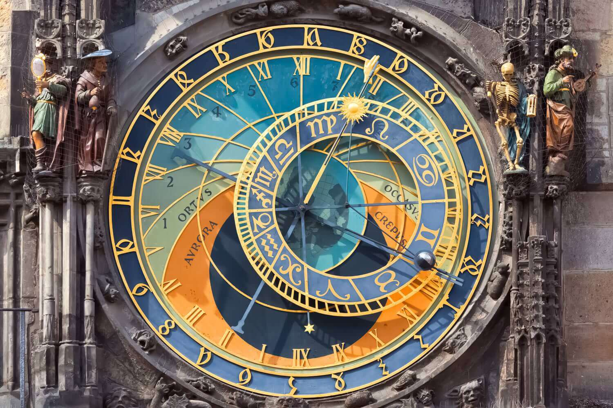

History of the Orloj
Prague's Astronomical Clock
The clock was first installed in 1410, making it the third-oldest astronomical clock in the world and the oldest clock still operating.

When it was created, the Prague Astronomical Clock was an outstanding technological achievement.
Brief time line of the Orloj
- 1410 - Imperial clockmaker Mikuláš of Kadaň creates a unique clockwork which was remarkable for the fact that in the multi-cultural city that Prague inarguably was, one could use different ways to tell the time.
- 1459 - Historical records kept by Bohuslav Hasištejnský z Lobkovic offer proof that the astrolabe on the Prague Astronomical Clock was existing and functioning.
- 1490 - Improvements are made to the astronomical clock and a calendar plate created by Master Hanuš is added. At midnight, the calendar plate always shifts to the next day. The figure of Death ("the Rattler") is also added to the astronomical clock.
- 1566 - The astronomical clock is fully mechanized, including the rotation of the calendar plate.
- 1629 - Repair of the astronomical clock recorded, but no details are given.
- 1659 - The astronomical clock is repaired. The exterior moving wooden figures were probably installed during the repair. The rotating lunar sphere system on the astrolabe was also created during this repair.
- 1787 - During extensive repairs on the Town Hall building, a proposal is made to have the astronomical clock removed and the clockwork brought to the scrap heap. The astronomical clock was not destroyed.
- 1866 - The repaired astronomical clock is put into operation on January 1, 1866. As much as possible was salvaged from the original clockwork, but a large modern chronometer is added which drives the mechanism running the clock. A chronometer is installed to transmit impulses to the main clock mechanism. An unveiling ceremony for the Calendarium plate is held on August 18. The plate is painted by artist Josef Mánes.
- 1945 - In the final days of World War II, the Old Town Hall is destroyed by the Nazis in May of 1945. An incendiary shell seriously damages the astronomical clock as well. The figures of the apostles as well as the greater part of the exterior decoration are burned. The astronomical clock mechanism is in a wretched state.
- 2005 - Astronomical clock is repaired and restoration work carried out. At the same time, the exterior figures on the astronomical clock are restored by painter Jiří Matějíček.